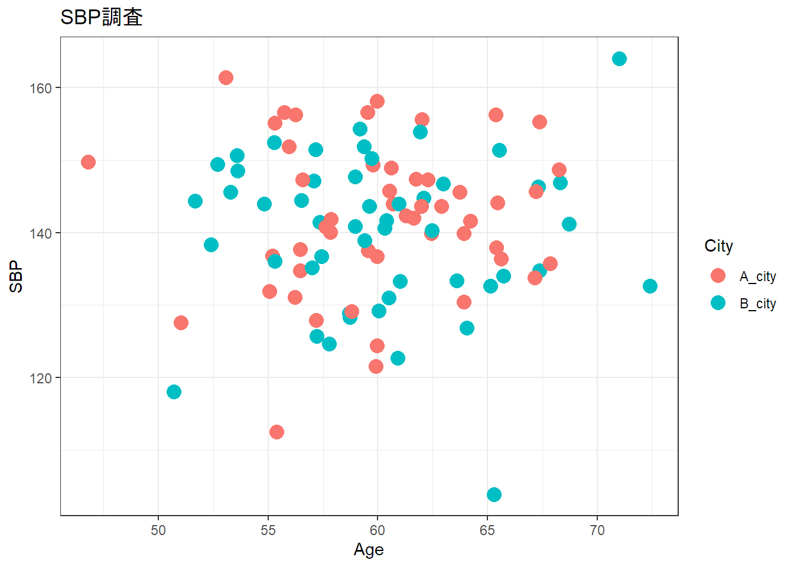
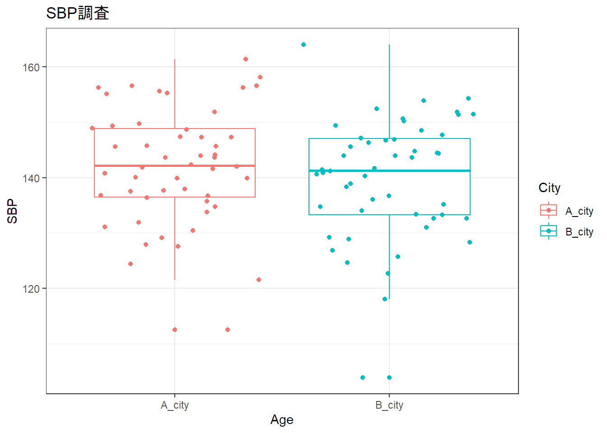
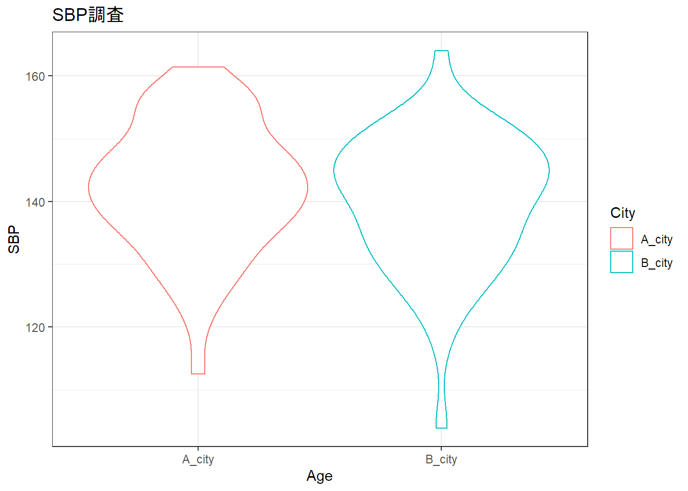
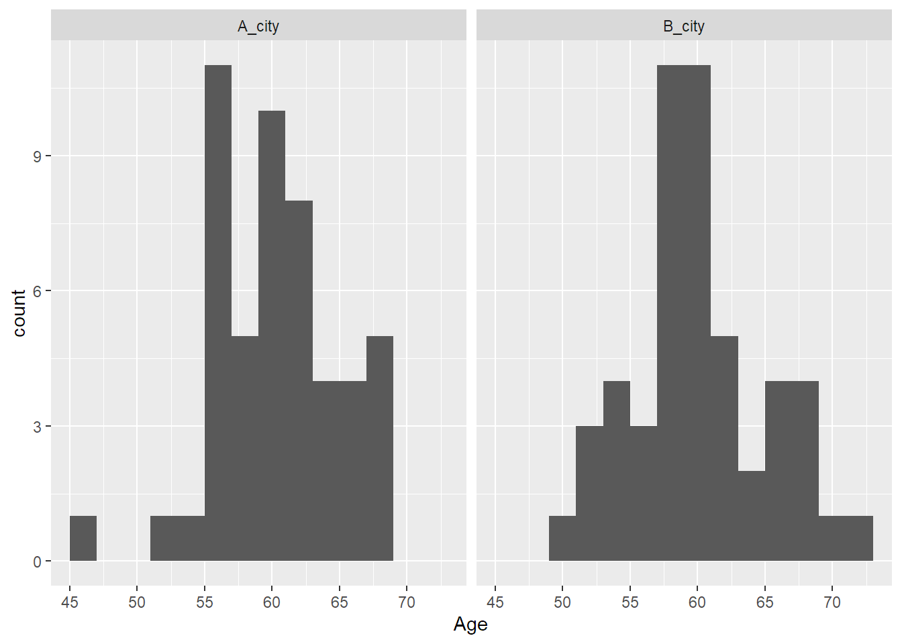
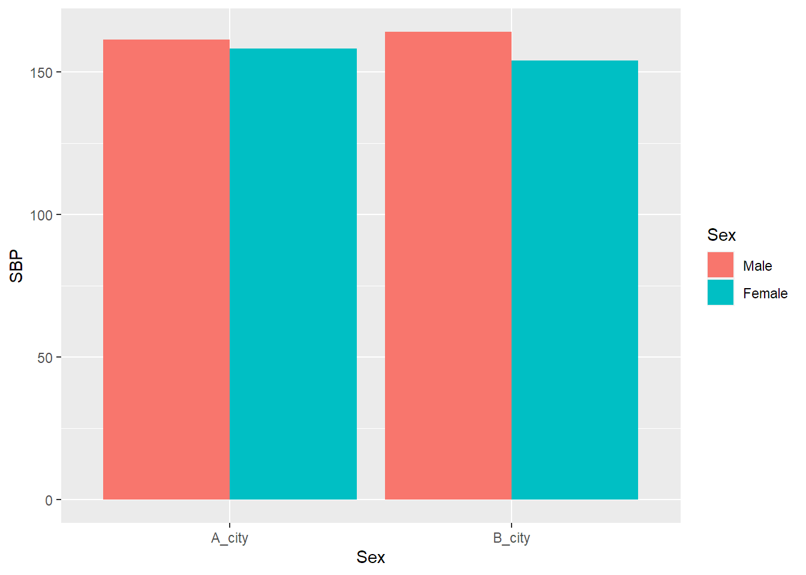

Rにはグラフを書く上でおもに２つの方法がある。
デフォルトのgraphicsで扱うplot関数などとggplot2パッケージによる方法である。
ここでは医学系でよく扱うグラフをggplot2を実装する。
あるA市とB市で収縮期血圧を調査した設定で架空データを作成する。
set.seed(125) # 乱数の固定のシード
a <- rnorm(n = 100, mean = 140, sd = 10 )
b <- rnorm(n = 100, mean = 60, sd = 5 )
c <- rep(c("A_city","B_city"),50)
d <- rbinom(n = 100, size = 1, prob = 0.6) # ここでは男性の割合を0.6として二項分布によるランダム値の作成
study <- data.frame(a,b,c,d)
name <- c("SBP", "Age", "City", "Sex")
colnames(study) <- name
# 性別は二値なのでデータ型を変換する
study$Sex <- as.factor(study$Sex)
study$Sex <- factor(study$Sex,levels = c(1,0),
labels = c("Male","Female"))summary(study)## SBP Age City Sex
## Min. :103.9 Min. :46.80 A_city:50 Male :63
## 1st Qu.:134.6 1st Qu.:56.90 B_city:50 Female:37
## Median :141.7 Median :59.93
## Mean :141.0 Mean :60.09
## 3rd Qu.:147.9 3rd Qu.:63.14
## Max. :164.0 Max. :72.41ggplotでは要素を追記していく形が基本となる。
散布図で連続変数同士の関係をみる。
例えば年齢と収縮期血圧の関係を見たい場合
library(ggplot2)
ggplot(data = study, aes(x = Age, y = SBP, colour = City)) +
# ここがベースで、使用するデータ、軸、およびcolourを指定することでカテゴリーごとに色分けできる
geom_point(size = 4) + # 散布図にするという指定
xlab("Age") + # x軸ラベルの命名
ylab("SBP") + # y軸ラベルの命名
ggtitle("SBP調査") + # グラフタイトルの命名
theme_bw() 
A市もB市も同じくらいばらついていそうである。
離散型の変数と連続型の変数の関係をみるために使う。
箱ひげ図により統計量(平均値、標準偏差)も一緒に図示できる。
ggplot(data = study, aes(x = City, y = SBP, colour = City)) +
geom_boxplot() + # ここがboxplotに変わっただけ
geom_jitter() + # 各点のばらつきを追加する
# geom_point(size = 3, alpha = 0.5) +
xlab("Age") +
ylab("SBP") +
ggtitle("SBP調査") +
theme_bw()
# バイオリンプロットも描くことができる
ggplot(data = study, aes(x = City, y = SBP, colour = City)) +
geom_violin() +
xlab("Age") +
ylab("SBP") +
ggtitle("SBP調査") +
theme_bw()
バイオリンプロットにより箱ひげ図とは違い、データの分布の密度をみることができる。
連続変数の分布をみる。
ここでは年齢の分布を示している。
# ヒストグラム
ggplot(data = study, aes(x = Age)) +
geom_histogram(binwidth = 2) + # ヒストグラム描きます、階級値は2にしますという宣言
facet_wrap(~City) # 群別の図を書くことができる
男性と女性による違いをみたい場合など
ggplot(data = study, aes(x = City, y = SBP, fill = Sex)) +
geom_bar(stat = "identity", position = "dodge") +
xlab("Sex") +
ylab("SBP")
大きな差はなさそうである。
医学系でよく使う基本的なグラフの基礎をまとめました。
ネットにもたくさん情報があるので、必要に応じて色々探してみてください。